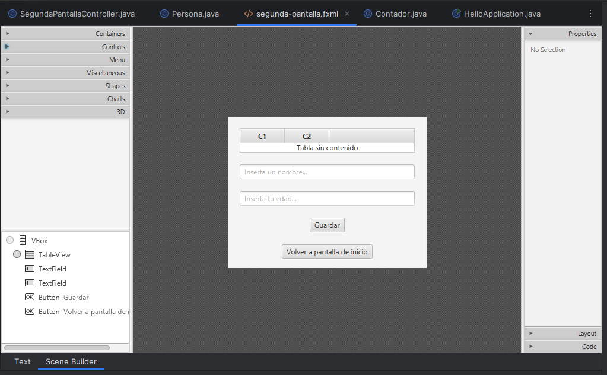
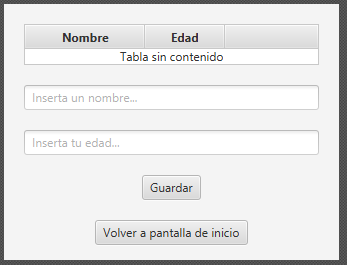
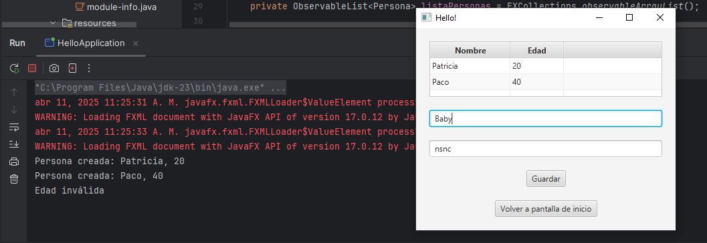
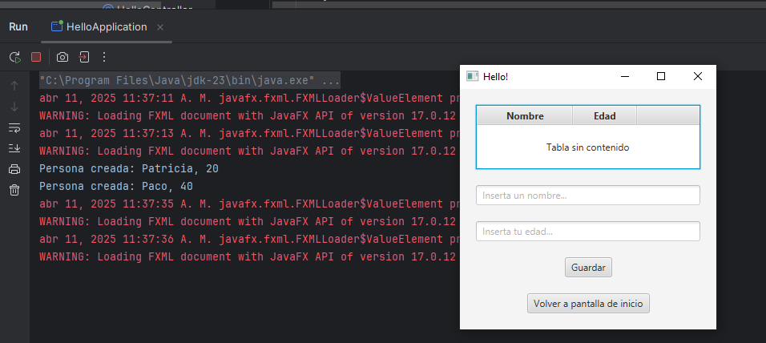
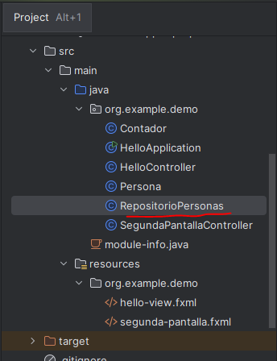
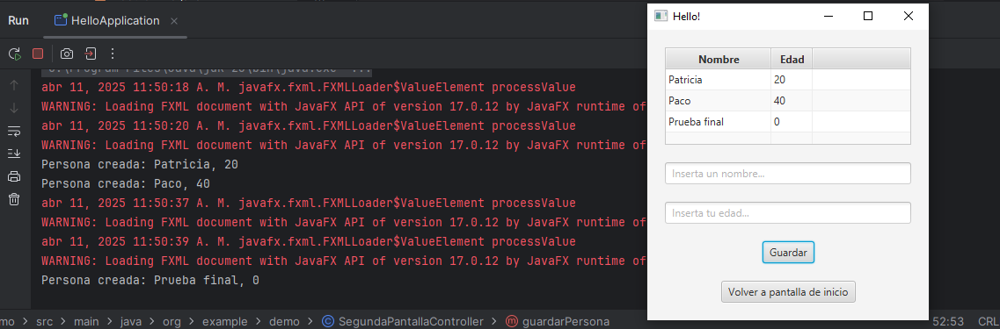

Para terminar con esta introducción, añadiremos a nuestra aplicación la posibilidad de imprimir en una tabla la información de las personas que vamos creando.
Insertamos una TableView en nuestro fxml:

y la retocamos desde el código para establecer sus propiedades:
<TableView fx:id="tablaPersonas">
<columns>
<TableColumn fx:id="columnaNombre" text="Nombre" prefWidth="120"/>
<TableColumn fx:id="columnaEdad" text="Edad" prefWidth="80"/>
</columns>
</TableView>Quedaría así:
<?xml version="1.0" encoding="UTF-8"?>
<?import javafx.geometry.*?>
<?import javafx.scene.control.*?>
<?import javafx.scene.layout.*?>
<VBox alignment="CENTER" prefHeight="247.0" prefWidth="335.0" spacing="20.0" xmlns="http://javafx.com/javafx/17.0.12" xmlns:fx="http://javafx.com/fxml/1" fx:controller="org.example.demo.SegundaPantallaController">
<padding>
<Insets bottom="20.0" left="20.0" right="20.0" top="20.0" />
</padding>
<TableView fx:id="tablaPersonas">
<columns>
<TableColumn fx:id="columnaNombre" text="Nombre" prefWidth="120"/>
<TableColumn fx:id="columnaEdad" text="Edad" prefWidth="80"/>
</columns>
</TableView>
<TextField fx:id="nombreTextField" promptText="Inserta un nombre..." />
<TextField fx:id="edadTextField" promptText="Inserta tu edad..." />
<Button onAction="#guardarPersona" text="Guardar" />
<Button onAction="#irAPantallaHello" text="Volver a pantalla de inicio" textAlignment="CENTER" />
</VBox>

Ahora, desde el controlador usaremos una lista de tipo ObservableList<Persona>. No te preocupes, porque lo único que asuta es el nombre: el comportamiento es el mismo que el de una lista tradicional. Enlazaremos las columnas a las propiedades de Persona, y añadiremos .add() a la lista por cada nueva persona cuando se hace clic en "Guardar".
package org.example.demo;
import javafx.collections.FXCollections;
import javafx.collections.ObservableList;
import javafx.fxml.FXML;
import javafx.scene.control.TableColumn;
import javafx.scene.control.TableView;
import javafx.scene.control.TextField;
import java.io.IOException;
public class SegundaPantallaController {
@FXML
private TextField nombreTextField;
@FXML
private TextField edadTextField;
@FXML
private TableView<Persona> tablaPersonas;
@FXML
private TableColumn<Persona, String> columnaNombre;
@FXML
private TableColumn<Persona, Integer> columnaEdad;
private ObservableList<Persona> listaPersonas = FXCollections.observableArrayList();
@FXML
public void initialize() {
// enlazamos columnas con propiedades del objeto Persona
columnaNombre.setCellValueFactory(data -> new javafx.beans.property.SimpleStringProperty(data.getValue().getNombre()));
columnaEdad.setCellValueFactory(data -> new javafx.beans.property.SimpleIntegerProperty(data.getValue().getEdad()).asObject());
// asignamos la lista al TableView
tablaPersonas.setItems(listaPersonas);
}
@FXML
private void guardarPersona() {
String nombre = nombreTextField.getText();
int edad;
try {
edad = Integer.parseInt(edadTextField.getText());
} catch (NumberFormatException e) {
System.out.println("Edad inválida");
return;
}
Persona persona = new Persona(nombre, edad);
listaPersonas.add(persona);
System.out.println("Persona creada: " + persona.getNombre() + ", " + persona.getEdad());
nombreTextField.clear();
edadTextField.clear();
}
@FXML
public void irAPantallaHello() throws IOException {
HelloApplication.setRoot("hello-view");
}
}
Lo probamos:

Haz esta prueba...
Ejecuta tu aplicación, crea a varias personas, vuelve a la pantalla principal y vuelve a entrar en tu segunda pantalla... han desaparecido las personas que teníamos en la tabla:

Eso pasa porque cuando volvemos a la pantalla de inicio, el controlador se vuelve a crear desde cero, lo que significa que se crea una nueva lista vacía (listaPersonas = FXCollections.observableArrayList()) y, por tanto, la tabla aparece vacía otra vez.
Para solucionarlo, usaremos una clase estática para guardar los datos de la lista:
import javafx.collections.FXCollections;
import javafx.collections.ObservableList;
public class RepositorioPersonas {
private static final ObservableList<Persona> personas = FXCollections.observableArrayList();
public static ObservableList<Persona> getPersonas() {
return personas;
}
public static void insertarPersona(Persona persona) {
personas.add(persona);
}
}

En el initialize() del controlador, deberemos modificar la llamada a .setItems() que teníamos para adaptarlo a la nueva clase:
@FXML
public void initialize() {
columnaNombre.setCellValueFactory(data -> new javafx.beans.property.SimpleStringProperty(data.getValue().getNombre()));
columnaEdad.setCellValueFactory(data -> new javafx.beans.property.SimpleIntegerProperty(data.getValue().getEdad()).asObject());
// en lugar de crear lista propia, usamos la lista estática
tablaPersonas.setItems(RepositorioPersonas.getPersonas());
}
Y al guardar, en lugar de hacer un .add directamente, usaremos el método insertarPersona() de la nueva clase estática:
@FXML
private void guardarPersona() {
String nombre = nombreTextField.getText();
int edad;
try {
edad = Integer.parseInt(edadTextField.getText());
} catch (NumberFormatException e) {
System.out.println("Edad inválida");
return;
}
Persona persona = new Persona(nombre, edad);
RepositorioPersonas.insertarPersona(persona);
System.out.println("Persona creada: " + persona.getNombre() + ", " + persona.getEdad());
nombreTextField.clear();
edadTextField.clear();
}Vuelve a probar y comprueba que ahora la lista se guarda correctamente aunque cambiemos la pantalla...
